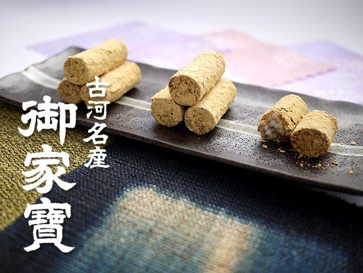
御家寳
煎ったうるち米をつぶさぬよう、水飴と砂糖でからめ、風味豊かな黄名粉で包みころがした、手作りの郷土菓子でございます。
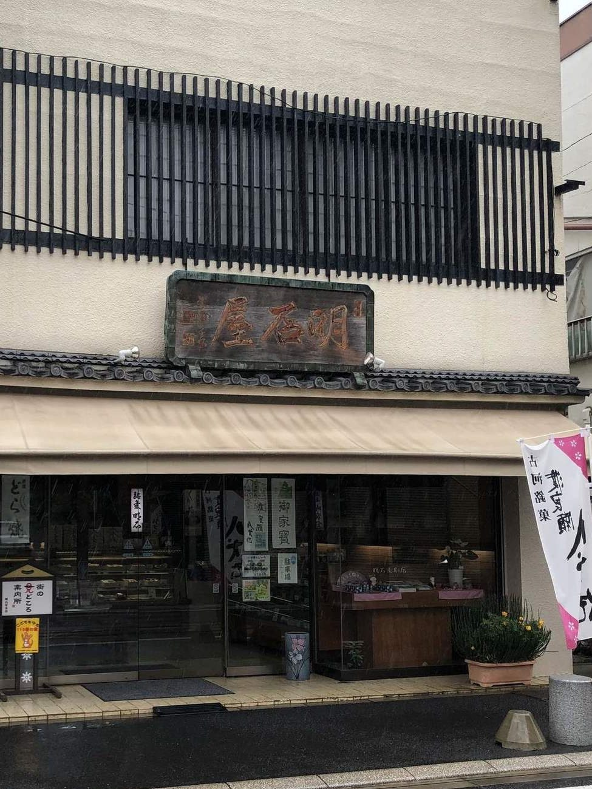
御菓子司 明治三十五年創業
渡良瀬八犬伝、許我どら焼、御家寳。
一品ずつ手作りの和菓子を、お持ち帰りに、ご贈答に。
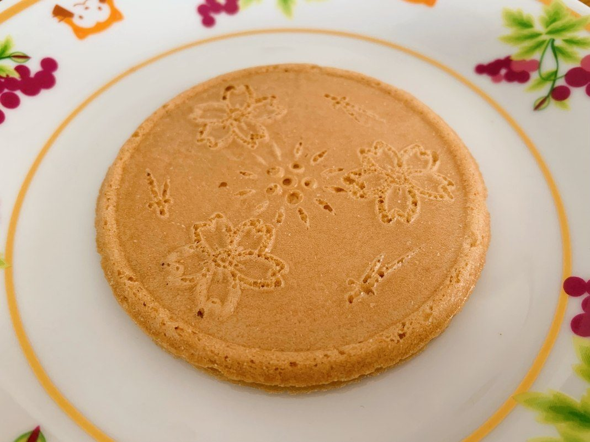
TYPE
型は、五弁の桃です。
KOGA BRAND
かつて渡良瀬川の河畔には古河城があり、『南総里見八犬伝』の名場面、芳流閣の決闘の舞台となりました。その古河の地に、藩主・土井利勝公は桃の木を植えさせました。渡良瀬八犬伝は、この二つの物語からいただいた菓子でございます。桃の花を焼き型で生地に描き、薄焼きのせんべいにクリームを挟んでお作りしております。
「煎餅生地は炭酸煎餅らしいカリカリとした硬質な食感とほろ苦さがあり香ばしい。」
お客様の声より
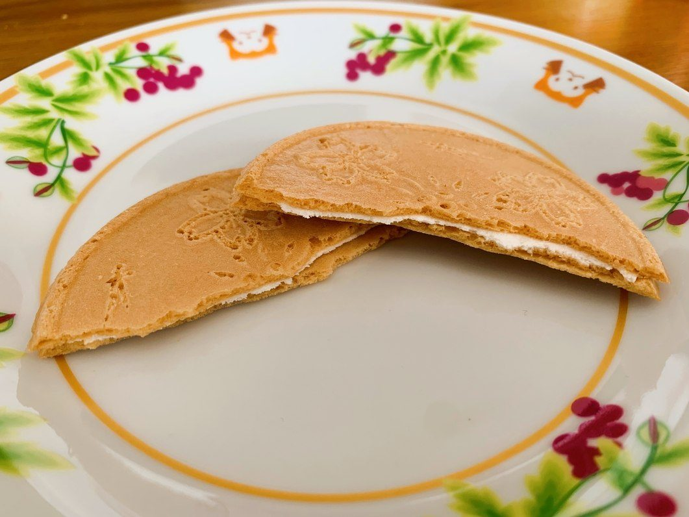
「許我」は、万葉の昔からの古河の名でございます。古河出身の篆刻家・生井子華先生の篆刻文字「許我」を焼印に起こし、手焼きの生地へ一つずつ手で押しております。
「許我はこれで「コガ｝と読み生地に『許我』の焼印が押されたものでしっとりした生地と甘すぎない餡子が良いですし、明石はお店のオリジナル商品で小麦粉、玉子、砂糖、大和芋、胡麻など混ぜて焼き上げた皮に小倉餡を挟んだもので胡麻の風味は良く美味しいです。」
お客様の声より
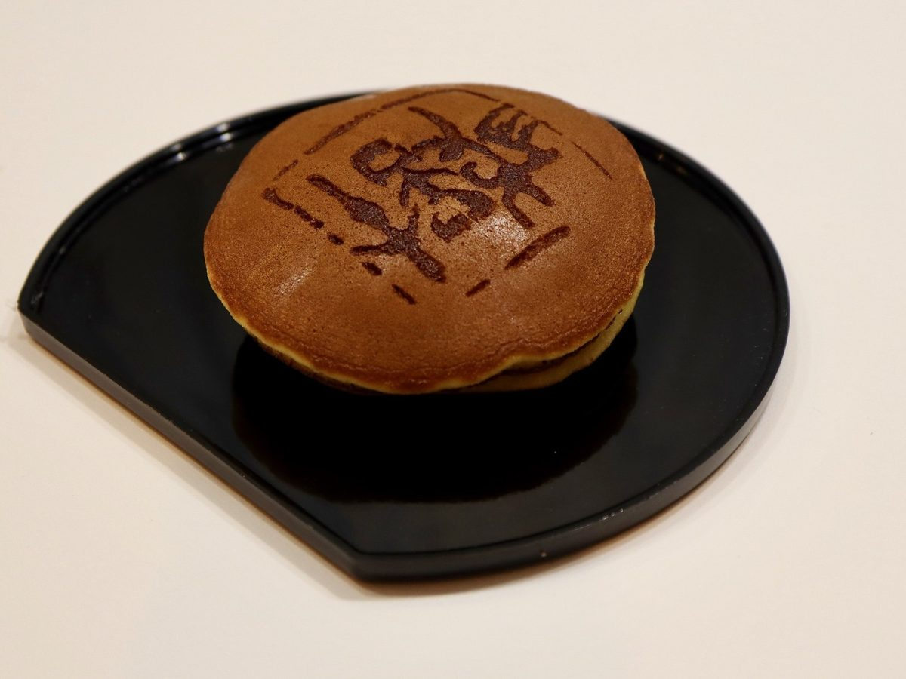
この二品は、古河市の「古河ブランド」に認証をいただいております。
MEIKA

煎ったうるち米をつぶさぬよう、水飴と砂糖でからめ、風味豊かな黄名粉で包みころがした、手作りの郷土菓子でございます。
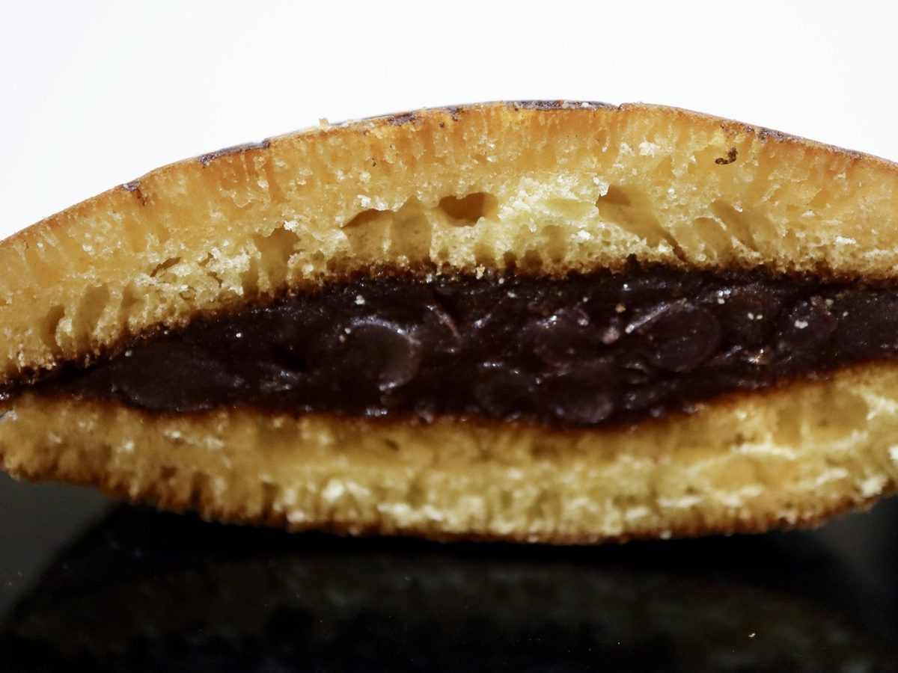
小麦粉、玉子、砂糖、大和芋に胡麻の風味を生かして焼き上げた皮で、小倉餡を挟みました。当店のオリジナルでございます。
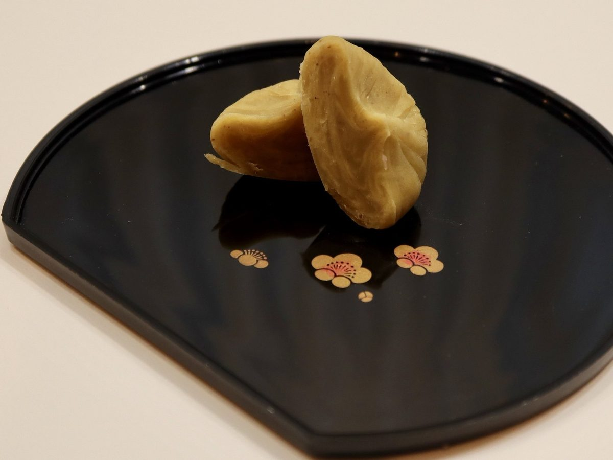
国産の栗を選りすぐり、茶巾しぼりに仕上げました。お茶の席に、ご進物に。
NAMAGASHI
春の草餅と柏餅、夏の水まんじゅう。春夏秋冬を映した生菓子と上生菓子を、その季節の間だけお作りしております。
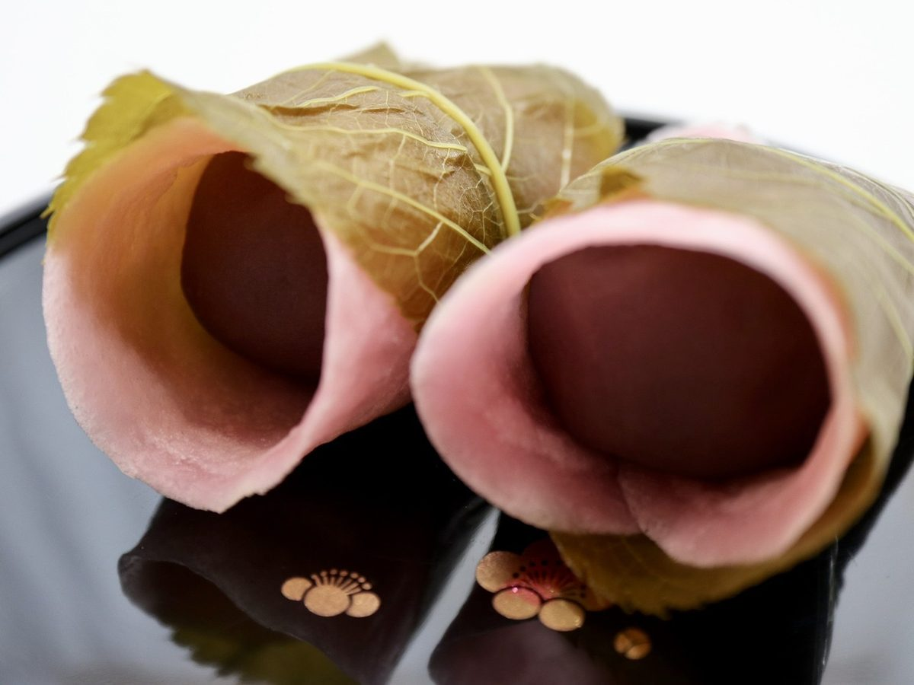
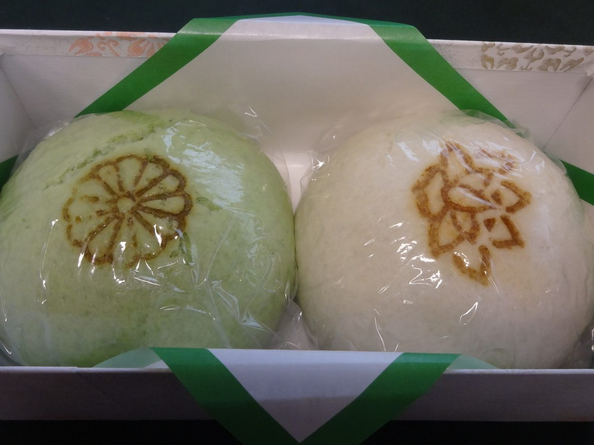
「初春限定の草餅はヨモギの香りも味も濃く、粒・こし・きな粉が選べます。今の時期の柏餅も大好きで、粒・こし共にあんこの甘さがちょうど良くて本当に美味しい。季節限定、数量限定なのでお早めにどうぞ」
お客様の声より
GIFT
お中元・お歳暮のご挨拶に、ご法要のお席に、折にふれてお使いいただいております。詰め合わせをはじめ、ご贈答用の品を多数ご用意しております。箱の取り合わせはご相談を承ります。
遠方へは全国へお送りいたします。ご注文はお電話とFAXで承り、お支払いは代金引換にてお願いしております。ご到着の日のご指定も承ります。食品のためご返品はご容赦いただいておりますが、万一お品に不備がございましたら、無条件でお取り替えいたします。
「少しあらたまった時のお土産にも、気軽な手土産にも出来る和菓子やスイーツが購入出来ます。古河の八犬伝は軽くて日持ちもする上に何より美味しい！お気に入り。」
お客様の声より
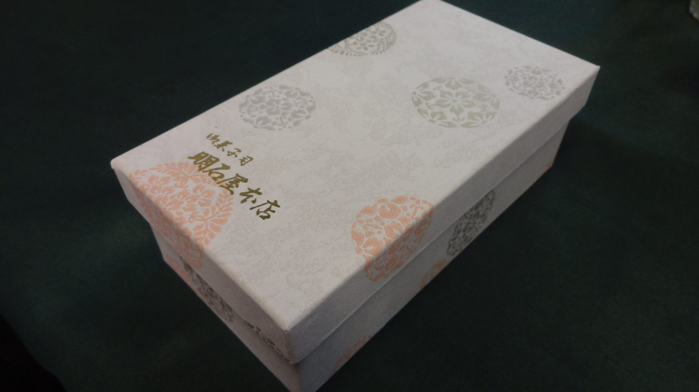
SINCE 1902
明治三十五年、初代・野澤領右衛門が、この横山町に店を開きました。初代の教えは「お客様に満足を」。いまは三代目を中心に、家族みんなで店に立っております。
受け継いだ技の上で、原材料には一切妥協をせず、一品一品丹精を込めて。季節を映す和菓子とともに、新しい和菓子への挑戦も忘れず、日々精進してまいります。
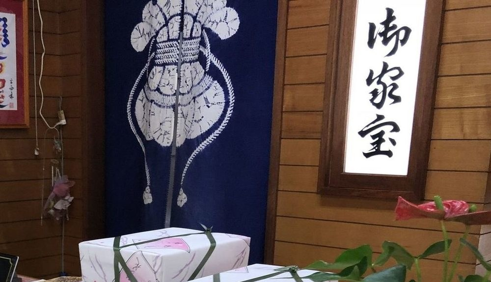
ACCESS
午前九時に開けております。毎週月曜日はお休みをいただいております。お閉めする時刻は、お電話でお確かめくださいませ。
店は旧日光街道、よこまち柳通りにございます。JR古河駅の西口から、歩いて十分ほどでございます。お車をお停めいただく場所がございます。
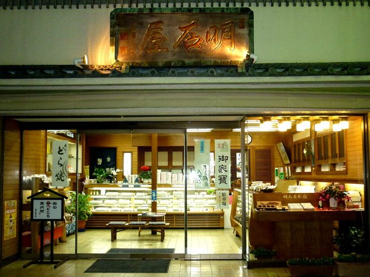
| 住所 | 〒306-0022 茨城県古河市横山町1-10-44 |
|---|---|
| 電話 | 0280-22-0012 |
| FAX | 0280-22-0012（お電話と同じ番号でございます） |
| 営業時間 | 午前9時開店 |
| 定休日 | 毎週月曜日 |
| 駐車場 | あり |
古河の物語を、これからも一つずつ、菓子の名前に写してまいります。